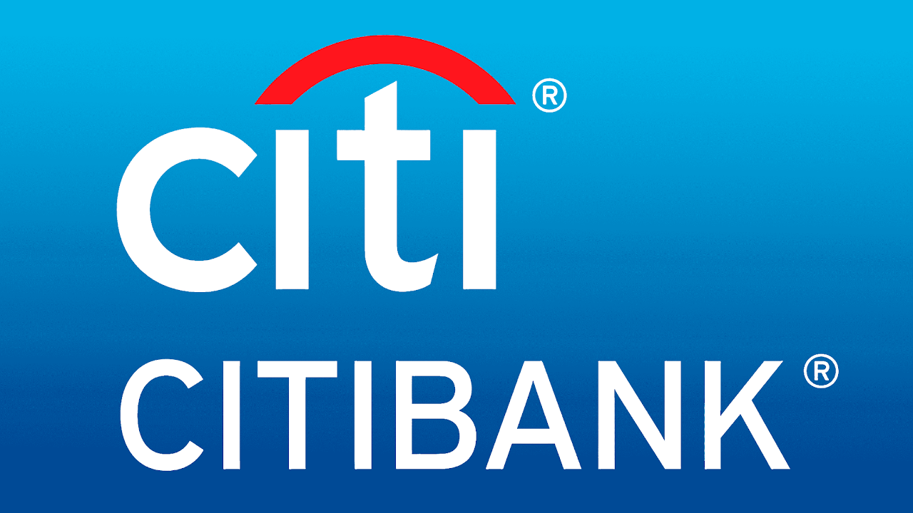
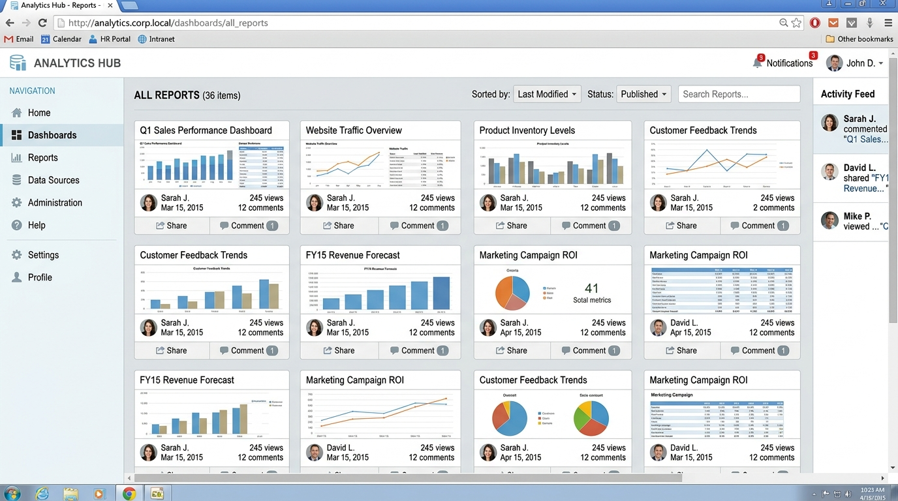

Citi DataTube
Enterprise Data Insight Platform · Project Brief
A web portal for publishing, discovering, and collaborating on data insights and visualizations across the enterprise. DataTube brings the simplicity of video sharing to corporate data analytics.

Upload data, connect to warehouses and streams, auto-generate visuals.
Search, browse, get personalized recommendations by role.
Discuss, annotate, share insights with preserved context.
Mix-and-match datasets into composite dashboards.
Enterprise access control, SSO, and compliance.
Analysts define what to show (data, aesthetics, geometry, scales) rather than how to draw it, producing flexible, composable visuals from any data source.
Instant publishing reduces time-to-value from months to minutes.
Self-service visuals eliminate ad-hoc report development and licensing.
Discussions and annotations stay with the data, not in email.
Any employee can discover and reuse insights across the organization.
Low-barrier access encourages evidence-based decisions at every level.